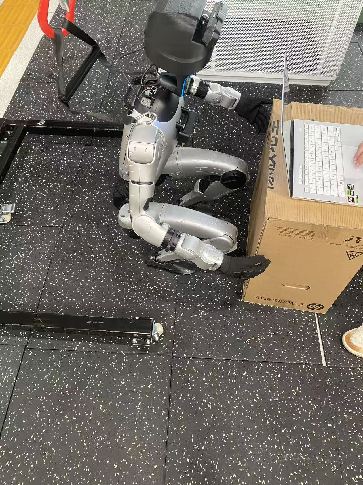
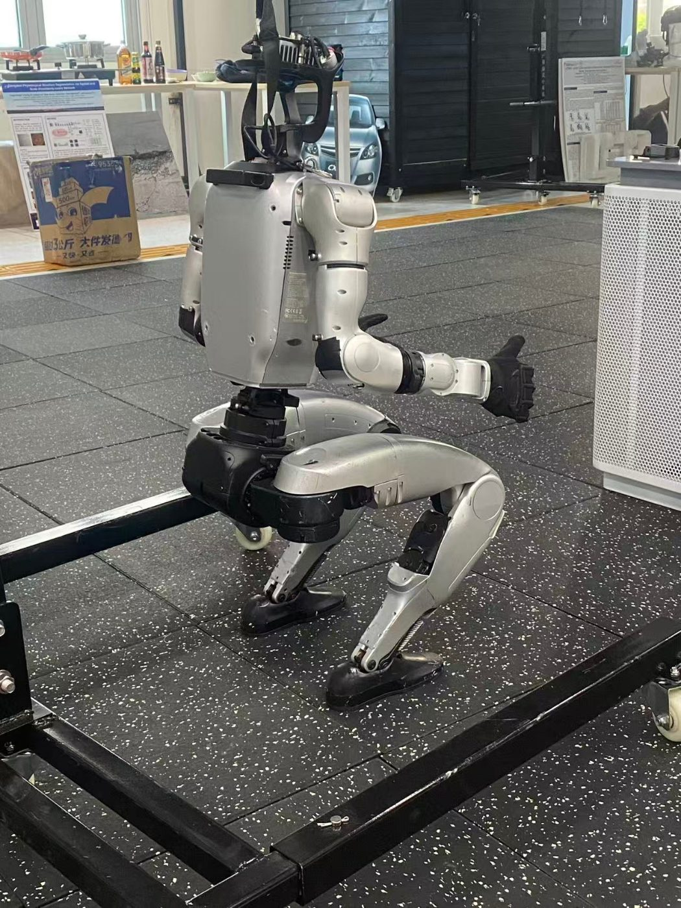
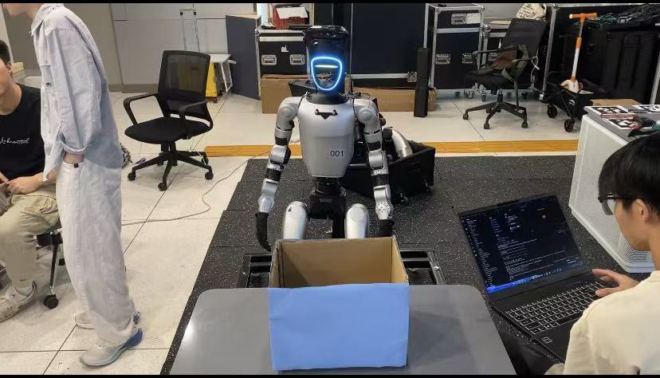

01 //
关于我
WHOAMI
IMG://huangyifeng.raw
[ 移动鼠标 · 解码影像 ]
一半是 AI Agent 工程师，
一半是懂增长的 运营人。
坐标深圳，毕业于深圳职业技术大学 · 人工智能学院 · 大数据技术专业。我熟悉 LangChain、LangGraph、MCP 与 RAG，能把一个模糊的业务问题拆成可调用的工具、可编排的状态图、可量化的指标，再让它在真机上、在真实的店铺里跑起来。
0x01复合背景AI Agent 应用开发 × 跨境电商业务，能把复杂业务拆解为感知、决策、执行、复盘的智能体工作流。
0x02独立交付运营台从后端、前端、浏览器插件、端到端测试到服务器部署，一个人做完并上线。
0x03结果导向Unitree G1 真机验证 + TikTokShop 美区运营，习惯用自动化流程和数据指标说话。
GROWTH PATH · 成长路径
EDU数据深圳职业技术大学
人工智能学院 · 大数据技术
2025.04业务TikTokShop 美区运营
懂选品、懂达人、懂指标
2026.07物理世界Unitree G1 双臂抓取
让 Agent 驱动真实机械臂
2026.09 → NOW融合跨境电商运营 Agent
把业务经验变成智能体
HOW I BUILD AGENTS · 我的 Agent 方法论
01拆解把业务拆成感知 / 决策 / 执行 / 复盘四段，先画清楚状态图再写代码。
02接工具用 Function Calling、MCP 和浏览器插件，把数据库、ERP、表格、网页变成 Agent 能调用的工具。
03编排用 LangGraph 管状态、分支、循环和失败回退，让流程可控、可追踪。
04增强RAG 知识库 + 结构化输出 + 上下文管理，同时控制质量和成本。
05复盘每一步留下状态和日志，缺什么就停下来提示人补，用数据驱动下一轮迭代。
02 //
技能星图
CONSTELLATION
每颗星是一项技能，同一个星团是一个技术领域，连线表示它们怎样组合在一起用。把鼠标移到星星上看看。
悬停查看关联 · 点击星星聚焦领域 · 鼠标会推开星星
FULL LIST · 完整清单
huangyifeng@stack: ~/skills
03 //
经历
GIT LOG --GRAPH
$ git log --graph --all
两条分支：一条通向真实的生意，一条通向真实的机器人，最后合并成我现在在做的事。
2290460HEAD → main2026.09 → now
Merge: ecommerce + robotics → 跨境电商 Agent
个人项目 · TikTok 跨境电商运营台 / 跨境电商 AI 运营 Agent 平台
把运营经验和 Agent 工程能力合并：多 Agent 自动上品流水线、1688 找货、浏览器插件、知识库、每日简报，已部署上线。查看项目 →
a7f3e21robotics2026.07 — 2026.09 · 珠海
无界智慧（珠海）科技有限公司
AI Agent 应用开发实习生 / 规控算法
- 基于 RGB-D 相机 + SAM3 完成箱体识别、点云处理、三维位姿计算和抓取点预测，打通视觉识别到双臂抓取的 Agent 执行链路。
- 开发 双臂七自由度逆运动学 与抓取动作流程，实现目标趋近、双臂抓取、夹取回撤等连续控制，并通过 Unitree G1 真机验证。
- 参与灵巧手小物体抓取开发，完成视觉定位、抓取规划与多指控制联动，沉淀可复用的人形机器人搬运基础能力。
- 分析视觉偏差、IK 不可达、机械臂异常和控制衔接问题，沉淀视觉数据、运行日志和异常排查流程，提升迭代效率。
3c9b0d4ecommerce2025.04 — 2025.07 · 深圳
深圳市锦鸿云商电子商务有限公司
跨境电商运营实习生 / TikTokShop 美区
- 参与运营 2 个 TikTokShop 美区店铺，维护 50+ SKU，店铺月 GMV 从 $5,000 提升至 $12,000。
- 每月筛选 50+ 潜力商品，测试上架 10+ 款，沉淀 3 款稳定出单款，单款月销最高 $3,500。
- 累计建联海外达人 300+，合作寄样 25+，产出带货视频 / 直播 40+，达人渠道月贡献 GMV 约 $5,000。
- 优化主图、标题和优惠券结构，商品页转化率从 1.0% 提升至 1.6%，退货率控制在 10% 以内。
0e1d5f8tag: init教育 · 深圳
深圳职业技术大学
人工智能学院 · 大数据技术
04 //
项目
SHIPPED
PROJECT 01 · 2026.10 · 已上线TikTok 跨境电商运营台
面向 TikTok Shop 卖家的选品与内容工具：FastMoss 数据选品 → 硬指标与利润测算 → AI 选品分析与测款方案 → 一键带货视频脚本，配套知识库和可对话的 Agent。所有 AI 功能都调用真实模型，没有离线假数据。
多 Agent 自动上品流水线
选品数据FastMoss 导出 22 列自动识别
AI 研判需求 / 趋势 / 达人 / 竞争 / 利润 / 风险
1688 找货关键词 + 以图搜，比价矩阵
选定供应商AI 判断同款度，成本上限
上架包本地语言标题、卖点、定价、违禁词检查
人工确认可设为全自动
推送 ERP妙手 ERP / Webhook / CSV
/select智能选品六维评估给出「可以上 / 谨慎测试 / 不建议上」，识别刷单、低价引流等硬伤，按站点费率倒推采购上限。
/script视频脚本按「钩子 → 痛点 → 演示 → 证明 → 行动号召」生成分镜，附 3 个备选钩子做 A/B 测款。
/extension浏览器插件1688 关键词搜 / 以图搜一键发送货源，自动补详情；随机节奏防风控。
/models多模型接入GLM、DeepSeek、Kimi、通义、豆包、OpenAI、Claude……一键启用、测试、拉取模型列表。
/kb知识库 + Agent上传 Word / PDF / 网页切片检索；Agent 流式输出、标注来源、显示思考过程。
/deploy一键部署systemd + Cloudflare 隧道，只监听本机端口，Host 白名单；Playwright 端到端测试。
git log --oneline · 真实提交记录
PROJECT 02 · 跨境电商 AI 运营 Agent 平台
2026.09 → NOW · FastAPI + LangGraph + DeepSeek全能运营智能体
多模块运营 Agent：运营总览、风险分析、竞品分析、销售监控、广告分析、库存管理。打通本地数据库、飞书多维表格、易仓 ERP、Amazon SP-API、Chrome 商品采集和卖家精灵 MCP，导入数据后自动生成风险等级、异常任务和每日简报。
05 //
机器人
UNITREE G1
2026 年夏天在无界智慧，我做的是让 Agent 驱动一台真实的人形机器人：从一帧 RGB-D 图像开始，到双臂把箱子抓起、收回。下面两个是根据这段经历做的交互示意。
RGB-D 采集SAM3 分割点云处理位姿估计抓取点预测双臂 IK抓取执行夹取回撤
POINT CLOUD · POSE拖动旋转 · 演示数据
DUAL-ARM IK⚠ IK 不可达移动鼠标控制目标 · 平面简化示意（真机为双臂 7-DoF）
ON SITE · 现场照片

REC 01 下蹲 · 双臂夹取纸箱

REC 02 目标趋近 · 双臂伸出

REC 03 实验室联调 · 视觉识别箱体
WHAT I DID · 我做了什么
01视觉 → 位姿基于 RGB-D 相机与 SAM3 完成箱体识别、点云处理、三维位姿计算和抓取点预测。
02双臂 7-DoF IK开发双臂七自由度逆运动学与抓取动作：目标趋近、双臂抓取、夹取回撤，Unitree G1 真机验证。
03灵巧手参与小物体抓取：视觉定位、抓取规划与多指控制联动，沉淀人形机器人搬运基础能力。
04排查流程分析视觉偏差、IK 不可达、机械臂异常和控制衔接问题，沉淀数据、日志和排查流程。
06 //
生活
OFF DUTY
代码之外的我。
badminton.exe · 点击球场扣杀
RALLY 0
SPORT
🏸 羽毛球
写代码之外，我最喜欢的运动是羽毛球，已经打了 5 年。
左边的球场可以点一下：在任意位置点击，就是一记扣杀。
IDOLS · 偶像
CREATOR · 抖音 @ludamobiubiu
鲁大魔
把时间和体力拼到极致，意志力会带你杀出重围。
本名鲁岳，泛知识领域的自媒体创作者。2022 年开始在抖音发布作品，内容以创业经历感悟分享、生活旅行随拍为主。
- 把抽象的想法变成具体的产品
- 从微观的角度思考，你才会看到具象化、可执行的指标
- 在生命的长度中，无限突破自己的宽度
他让我相信：普通人靠拼劲和执行力，也能杀出一条路。做 Agent 也一样，先把模糊的想法拆成一步一步能执行的动作。
MUSIC · BEYOND
黄家驹
原谅我这一生不羁放纵爱自由，也会怕有一天会跌倒。
Beyond 乐队主唱、吉他手和主要创作人（1962.6.10 – 1993.6.30）。1983 年和乐队成员组建 Beyond，用摇滚唱理想、自由与和平。1993 年在日本东京录制节目时意外坠台，31 岁离世。
写代码时我常循环他的歌。他坚持做自己相信的音乐，这份不妥协一直激励着我。
右下角的「空间：聆听」可以打开背景音乐，是浏览器实时合成的氛围音乐，背景字符会跟着节奏跳动。
07 //
资料库
LIBRARY
从我的收藏夹里挑出来、反复打开的资料，按学习路线排好，每条附一句点评。下面还有做项目时踩过的坑。
FIELD NOTES · 踩坑笔记
来自运营台真实的 commit 记录和机器人项目。点开看问题和解法。
08 //
AI 分身
ASK ME ANYTHING

黄奕锋 · AI 分身● online · 本地知识库
09 //
终端
SHELL
guest@huangyifeng: ~ — zsh
试试 neofetchhelpcd robottheme greenhobbyhack